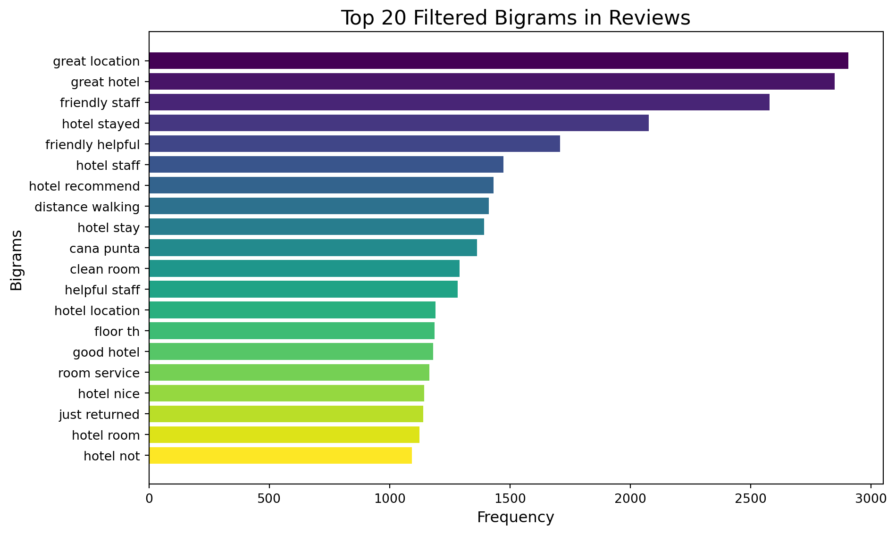

Code
import torchYixin Luo
This project analyzes customer feedback through aspect-based sentiment analysis and n-gram analysis, providing actionable insights into guest experiences. Key aspects like location, service, room, and staff were evaluated to identify strengths, weaknesses, and trends in reviews.
By combining sentiment and linguistic analyses, this approach enables businesses to: - Understand guest preferences and concerns. - Improve service quality with data-driven insights. - Uncover patterns in customer feedback to enhance guest satisfaction.
import torchimport pandas as pd
import numpy as np
import re
from sklearn.feature_extraction.text import TfidfVectorizer
from nltk.corpus import stopwords
from nltk.tokenize import word_tokenize
from nltk.util import ngrams
from collections import Counter
import nltk
import matplotlib.pyplot as plt
import seaborn as sns
from sklearn.model_selection import train_test_split
from sklearn.feature_extraction.text import TfidfVectorizer
from sklearn.naive_bayes import MultinomialNB
from sklearn.metrics import classification_report, accuracy_score
## Load data
df = pd.read_csv('~/Downloads/tripadvisor_hotel_reviews.csv')
## distribution of ratings
plt.figure(figsize=(8, 5))
sns.countplot(data=df, x='Rating', palette='viridis')
plt.title('Distribution of Ratings')
plt.xlabel('Rating')
plt.ylabel('Count')
plt.show()
## Check the length of reviews
df["word_length"] = df["Review"].apply(len)
plt.figure(figsize=(10, 6))
sns.histplot(data=df, x="word_length", hue="Rating", multiple="stack", palette="bright")
plt.title('Distribution of Text Lengths by Class', fontsize=16)
plt.xlabel('Text Length', fontsize=14)
plt.ylabel('Frequency')
plt.show()from collections import Counter
import pandas as pd
import re
# Step 1: Preprocess the text
def clean_text(text):
text = text.lower() # Convert to lowercase
text = re.sub(r'[^\w\s]', '', text) # Remove punctuation
text = re.sub(r'\d+', '', text) # Remove numbers
return text
df['cleaned_review'] = df['Review'].apply(clean_text)
# Step 2: Tokenize the text and count words
all_words = ' '.join(df['cleaned_review']).split() # Combine all reviews and split into words
word_counts = Counter(all_words) # Count word frequencies
# Step 3: Get the most common words
most_common_words = word_counts.most_common(20) # Top 20 most common words
print("Most Common Words:", most_common_words)
# Convert to a DataFrame for better readability
most_common_df = pd.DataFrame(most_common_words, columns=['Word', 'Frequency'])
print(most_common_df)
# Horizontal visualization
plt.figure(figsize=(10, 6))
plt.barh(most_common_df['Word'], most_common_df['Frequency'], color='skyblue')
plt.title('Top 20 Most Common Words in Reviews', fontsize=16)
plt.xlabel('Frequency', fontsize=12)
plt.ylabel('Words', fontsize=12)
plt.gca().invert_yaxis() # Invert y-axis to show highest frequency on top
plt.tight_layout()
plt.show()Most Common Words: [('hotel', 48864), ('room', 34324), ('not', 31525), ('great', 21094), ('nt', 19000), ('good', 16986), ('staff', 16213), ('stay', 15158), ('did', 13895), ('just', 12592), ('nice', 12409), ('rooms', 12024), ('no', 11620), ('location', 11043), ('stayed', 10469), ('service', 9975), ('time', 9824), ('night', 9728), ('beach', 9592), ('day', 9541)]
Word Frequency
0 hotel 48864
1 room 34324
2 not 31525
3 great 21094
4 nt 19000
5 good 16986
6 staff 16213
7 stay 15158
8 did 13895
9 just 12592
10 nice 12409
11 rooms 12024
12 no 11620
13 location 11043
14 stayed 10469
15 service 9975
16 time 9824
17 night 9728
18 beach 9592
19 day 9541
# remove the big comments
df = df[df['word_length'] <= 3000]
df["word_length"] = df["Review"].apply(len)
plt.figure(figsize=(10, 6))
sns.histplot(data=df, x="word_length", hue="Rating", multiple="stack", palette="bright")
plt.title('Distribution of Text Lengths by Class', fontsize=16)
plt.xlabel('Text Length', fontsize=14)
plt.ylabel('Frequency')
plt.show()
import pandas as pd
import re
from nltk.corpus import stopwords
from nltk.tokenize import word_tokenize
import nltk
# Text cleaning function
def clean_text(text):
text = text.lower() # Convert to lowercase
text = re.sub(r'[^\w\s]', '', text) # Remove punctuation
text = re.sub(r'\d+', '', text) # Remove numbers
text = re.sub(r'\s+', ' ', text).strip() # Remove extra whitespace
return text
# Apply text cleaning
df.loc[:, 'cleaned_review'] = df['Review'].apply(clean_text)
print(df) Review Rating word_length \
0 nice hotel expensive parking got good deal sta... 4 593
1 ok nothing special charge diamond member hilto... 2 1689
2 nice rooms not 4* experience hotel monaco seat... 3 1427
3 unique, great stay, wonderful time hotel monac... 5 600
4 great stay great stay, went seahawk game aweso... 5 1281
... ... ... ...
20485 not impressed unfriendly staff checked asked h... 2 616
20486 best kept secret 3rd time staying charm, not 5... 5 733
20487 great location price view hotel great quick pl... 4 306
20488 ok just looks nice modern outside, desk staff ... 2 443
20490 people talking, ca n't believe excellent ratin... 2 620
cleaned_review
0 nice hotel expensive parking got good deal sta...
1 ok nothing special charge diamond member hilto...
2 nice rooms not experience hotel monaco seattle...
3 unique great stay wonderful time hotel monaco ...
4 great stay great stay went seahawk game awesom...
... ...
20485 not impressed unfriendly staff checked asked h...
20486 best kept secret rd time staying charm not sta...
20487 great location price view hotel great quick pl...
20488 ok just looks nice modern outside desk staff n...
20490 people talking ca nt believe excellent ratings...
[20196 rows x 4 columns]I implemented an aspect-based sentiment analysis to uncover insights from hotel reviews, focusing on key aspects: location, service, room, and staff. This analysis helps break down overall feedback into actionable insights for each category.
To analyze thousands of reviews efficiently, I employed multithreading, speeding up the process while maintaining accuracy.
I structured the results into interactive visualizations, including: - Sentiment Scores: Displaying the average sentiment for each aspect. - Radar Charts: Providing an intuitive overview of customer perceptions.
## Define aspects
aspects = ['location', 'service', 'room', 'staff']
import pandas as pd
from transformers import pipeline
from concurrent.futures import ThreadPoolExecutor
from tqdm import tqdm
df_sample = df.sample(1000, random_state=42)
df_sample['cleaned_review'] = df_sample['Review'].apply(clean_text)
aspect_sentiment_pipeline = pipeline(
"text-classification",
model="distilbert-base-uncased-finetuned-sst-2-english",
framework="pt", # Force PyTorch
truncation=True,
padding=True
)
# Function to handle missing aspects and perform sentiment analysis
def analyze_aspect_sentiments_with_missing_handling(review, aspects):
aspect_sentiments = {}
for aspect in aspects:
# Check if the aspect is mentioned in the review
if aspect in review:
text = f"{review} What do you think about the {aspect}?"
result = aspect_sentiment_pipeline(text)
aspect_sentiments[aspect] = {
'label': result[0]['label'], # Positive, Neutral, or Negative
'score': result[0]['score'] if result[0]['label'] == 'POSITIVE' else -result[0]['score']
}
else:
# Assign default value if aspect is not mentioned
aspect_sentiments[aspect] = {
'label': 'Not Mentioned',
'score': None
}
return aspect_sentiments
# Apply the function using multithreading for efficiency
with ThreadPoolExecutor(max_workers=4) as executor:
results = list(tqdm(executor.map(lambda x: analyze_aspect_sentiments_with_missing_handling(x, aspects),
df_sample['cleaned_review']),
total=len(df_sample)))
# Add results to the DataFrame
df_sample['aspect_sentiments'] = results
# Extract aspect scores into a separate DataFrame
aspect_scores_df = pd.json_normalize(df_sample['aspect_sentiments'])
print(df_sample[['Review', 'aspect_sentiments']].head())/Users/yixin/anaconda3/lib/python3.11/site-packages/transformers/utils/generic.py:441: FutureWarning:
`torch.utils._pytree._register_pytree_node` is deprecated. Please use `torch.utils._pytree.register_pytree_node` instead.
/Users/yixin/anaconda3/lib/python3.11/site-packages/transformers/utils/generic.py:309: FutureWarning:
`torch.utils._pytree._register_pytree_node` is deprecated. Please use `torch.utils._pytree.register_pytree_node` instead.
huggingface/tokenizers: The current process just got forked, after parallelism has already been used. Disabling parallelism to avoid deadlocks...
To disable this warning, you can either:
- Avoid using `tokenizers` before the fork if possible
- Explicitly set the environment variable TOKENIZERS_PARALLELISM=(true | false)
0%| | 0/1000 [00:00<?, ?it/s] 0%| | 1/1000 [00:00<09:28, 1.76it/s] 0%| | 2/1000 [00:00<05:28, 3.04it/s] 0%| | 3/1000 [00:01<05:09, 3.22it/s] 0%| | 4/1000 [00:01<04:29, 3.70it/s] 1%| | 12/1000 [00:01<01:08, 14.43it/s] 1%|▏ | 14/1000 [00:01<01:21, 12.10it/s] 2%|▏ | 17/1000 [00:02<01:32, 10.60it/s] 2%|▏ | 21/1000 [00:02<01:09, 14.09it/s] 3%|▎ | 28/1000 [00:02<00:45, 21.41it/s] 3%|▎ | 31/1000 [00:02<00:57, 16.94it/s] 4%|▎ | 37/1000 [00:03<01:31, 10.57it/s] 5%|▍ | 49/1000 [00:03<00:50, 18.77it/s] 6%|▌ | 56/1000 [00:04<00:59, 15.97it/s] 7%|▋ | 68/1000 [00:04<00:38, 24.07it/s] 7%|▋ | 72/1000 [00:04<00:39, 23.39it/s] 8%|▊ | 76/1000 [00:05<00:54, 17.02it/s] 9%|▊ | 86/1000 [00:05<00:35, 25.46it/s] 9%|▉ | 91/1000 [00:05<00:40, 22.43it/s] 10%|█ | 100/1000 [00:05<00:34, 25.89it/s] 10%|█ | 104/1000 [00:06<00:36, 24.55it/s] 11%|█ | 108/1000 [00:06<00:41, 21.25it/s] 11%|█ | 111/1000 [00:07<01:19, 11.19it/s] 12%|█▎ | 125/1000 [00:07<00:39, 22.19it/s] 13%|█▎ | 130/1000 [00:07<00:42, 20.40it/s] 13%|█▎ | 134/1000 [00:07<00:43, 19.71it/s] 14%|█▍ | 138/1000 [00:08<00:56, 15.25it/s] 15%|█▌ | 150/1000 [00:08<00:40, 21.15it/s] 15%|█▌ | 154/1000 [00:08<00:38, 22.05it/s] 16%|█▌ | 160/1000 [00:08<00:34, 24.51it/s] 16%|█▋ | 164/1000 [00:09<00:31, 26.64it/s] 17%|█▋ | 168/1000 [00:09<00:41, 20.16it/s] 17%|█▋ | 171/1000 [00:09<01:01, 13.39it/s] 18%|█▊ | 183/1000 [00:10<00:37, 21.71it/s] 19%|█▊ | 186/1000 [00:10<00:40, 19.96it/s] 19%|█▉ | 189/1000 [00:10<00:40, 19.95it/s] 19%|█▉ | 192/1000 [00:10<00:42, 19.08it/s] 20%|█▉ | 195/1000 [00:10<00:45, 17.63it/s] 20%|█▉ | 197/1000 [00:11<00:45, 17.65it/s] 20%|██ | 200/1000 [00:11<01:08, 11.75it/s] 20%|██ | 202/1000 [00:12<01:42, 7.82it/s] 22%|██▏ | 217/1000 [00:12<00:42, 18.28it/s] 22%|██▏ | 222/1000 [00:12<00:39, 19.95it/s] 22%|██▎ | 225/1000 [00:12<00:38, 19.91it/s] 23%|██▎ | 228/1000 [00:13<00:44, 17.34it/s] 23%|██▎ | 230/1000 [00:13<00:43, 17.67it/s] 23%|██▎ | 234/1000 [00:13<00:36, 20.97it/s] 24%|██▎ | 237/1000 [00:13<00:45, 16.60it/s] 24%|██▍ | 242/1000 [00:13<00:50, 15.16it/s] 25%|██▌ | 254/1000 [00:14<00:28, 25.96it/s] 26%|██▌ | 258/1000 [00:14<00:26, 27.67it/s] 26%|██▌ | 262/1000 [00:14<00:48, 15.19it/s] 27%|██▋ | 271/1000 [00:15<00:43, 16.62it/s] 28%|██▊ | 278/1000 [00:15<00:34, 20.67it/s] 28%|██▊ | 283/1000 [00:15<00:42, 16.97it/s] 29%|██▉ | 293/1000 [00:16<00:40, 17.46it/s] 30%|██▉ | 296/1000 [00:16<00:40, 17.49it/s] 30%|███ | 305/1000 [00:16<00:29, 23.66it/s] 31%|███ | 309/1000 [00:17<00:31, 21.74it/s] 31%|███ | 312/1000 [00:17<00:53, 12.80it/s] 32%|███▏ | 324/1000 [00:18<00:35, 19.29it/s] 33%|███▎ | 329/1000 [00:18<00:30, 22.14it/s] 33%|███▎ | 333/1000 [00:18<00:28, 23.57it/s] 34%|███▎ | 337/1000 [00:18<00:30, 21.40it/s] 34%|███▍ | 341/1000 [00:18<00:30, 21.56it/s] 34%|███▍ | 345/1000 [00:19<00:34, 18.90it/s] 35%|███▌ | 352/1000 [00:19<00:39, 16.34it/s] 36%|███▌ | 358/1000 [00:19<00:37, 17.35it/s] 36%|███▋ | 365/1000 [00:19<00:27, 23.50it/s] 37%|███▋ | 369/1000 [00:20<00:29, 21.09it/s] 37%|███▋ | 372/1000 [00:20<00:29, 21.28it/s] 38%|███▊ | 376/1000 [00:20<00:27, 22.80it/s] 38%|███▊ | 380/1000 [00:20<00:33, 18.37it/s] 38%|███▊ | 383/1000 [00:20<00:31, 19.88it/s] 39%|███▉ | 388/1000 [00:21<00:53, 11.45it/s] 40%|███▉ | 397/1000 [00:22<00:40, 14.92it/s] 40%|████ | 402/1000 [00:22<00:35, 16.94it/s] 41%|████ | 407/1000 [00:22<00:28, 20.50it/s] 41%|████ | 410/1000 [00:22<00:31, 18.62it/s] 41%|████▏ | 413/1000 [00:22<00:37, 15.46it/s] 42%|████▏ | 420/1000 [00:23<00:29, 19.57it/s] 42%|████▎ | 425/1000 [00:23<00:33, 17.00it/s] 43%|████▎ | 432/1000 [00:24<00:33, 16.94it/s] 43%|████▎ | 434/1000 [00:24<00:33, 16.99it/s] 44%|████▎ | 436/1000 [00:24<00:35, 15.93it/s] 44%|████▍ | 441/1000 [00:24<00:30, 18.25it/s] 44%|████▍ | 444/1000 [00:24<00:33, 16.60it/s] 45%|████▍ | 446/1000 [00:25<00:40, 13.53it/s] 45%|████▌ | 452/1000 [00:25<00:27, 19.62it/s] 46%|████▌ | 455/1000 [00:25<00:38, 14.05it/s] 46%|████▌ | 461/1000 [00:26<00:43, 12.50it/s] 47%|████▋ | 466/1000 [00:26<00:41, 12.95it/s] 47%|████▋ | 474/1000 [00:27<00:38, 13.60it/s] 48%|████▊ | 481/1000 [00:27<00:27, 18.57it/s] 48%|████▊ | 484/1000 [00:27<00:25, 19.89it/s] 49%|████▊ | 487/1000 [00:27<00:32, 15.83it/s] 49%|████▉ | 490/1000 [00:27<00:40, 12.51it/s] 50%|████▉ | 498/1000 [00:28<00:43, 11.54it/s] 51%|█████ | 510/1000 [00:29<00:26, 18.19it/s] 52%|█████▏ | 517/1000 [00:29<00:23, 20.77it/s] 52%|█████▏ | 522/1000 [00:29<00:25, 18.94it/s] 52%|█████▎ | 525/1000 [00:29<00:23, 19.92it/s] 53%|█████▎ | 529/1000 [00:29<00:25, 18.21it/s] 53%|█████▎ | 533/1000 [00:30<00:22, 20.85it/s] 54%|█████▎ | 536/1000 [00:30<00:35, 12.89it/s] 54%|█████▍ | 544/1000 [00:30<00:22, 20.46it/s] 55%|█████▍ | 548/1000 [00:30<00:22, 20.23it/s] 55%|█████▌ | 552/1000 [00:31<00:20, 21.58it/s] 56%|█████▌ | 555/1000 [00:31<00:19, 22.28it/s] 56%|█████▌ | 558/1000 [00:31<00:19, 22.11it/s] 56%|█████▋ | 564/1000 [00:31<00:19, 22.32it/s] 57%|█████▋ | 567/1000 [00:31<00:25, 17.15it/s] 57%|█████▋ | 574/1000 [00:32<00:18, 23.04it/s] 58%|█████▊ | 577/1000 [00:32<00:19, 22.19it/s] 58%|█████▊ | 581/1000 [00:32<00:21, 19.60it/s] 59%|█████▉ | 588/1000 [00:33<00:33, 12.22it/s] 61%|██████ | 606/1000 [00:33<00:15, 24.80it/s] 61%|██████ | 612/1000 [00:33<00:17, 22.36it/s] 62%|██████▏ | 620/1000 [00:34<00:16, 22.36it/s] 62%|██████▎ | 625/1000 [00:34<00:19, 19.50it/s] 63%|██████▎ | 633/1000 [00:34<00:14, 25.61it/s] 64%|██████▎ | 637/1000 [00:35<00:14, 24.82it/s] 64%|██████▍ | 641/1000 [00:35<00:16, 22.13it/s] 65%|██████▍ | 648/1000 [00:35<00:14, 24.24it/s] 65%|██████▌ | 653/1000 [00:36<00:23, 14.93it/s] 67%|██████▋ | 666/1000 [00:36<00:13, 25.02it/s] 67%|██████▋ | 671/1000 [00:36<00:13, 25.14it/s] 68%|██████▊ | 675/1000 [00:37<00:18, 17.12it/s] 68%|██████▊ | 682/1000 [00:37<00:16, 19.80it/s] 68%|██████▊ | 685/1000 [00:37<00:16, 19.57it/s] 69%|██████▉ | 688/1000 [00:37<00:17, 18.28it/s] 69%|██████▉ | 692/1000 [00:37<00:15, 19.70it/s] 70%|██████▉ | 695/1000 [00:38<00:15, 19.42it/s] 70%|██████▉ | 698/1000 [00:38<00:16, 18.33it/s] 70%|███████ | 700/1000 [00:38<00:26, 11.46it/s] 70%|███████ | 704/1000 [00:38<00:21, 14.06it/s] 71%|███████▏ | 713/1000 [00:39<00:13, 20.60it/s] 72%|███████▏ | 719/1000 [00:39<00:12, 21.84it/s] 72%|███████▏ | 722/1000 [00:39<00:18, 14.64it/s] 73%|███████▎ | 729/1000 [00:39<00:13, 20.15it/s] 74%|███████▎ | 735/1000 [00:40<00:11, 23.62it/s] 74%|███████▍ | 739/1000 [00:40<00:19, 13.25it/s] 76%|███████▌ | 755/1000 [00:40<00:08, 27.72it/s] 76%|███████▌ | 761/1000 [00:41<00:09, 24.28it/s] 77%|███████▋ | 766/1000 [00:41<00:10, 23.25it/s] 77%|███████▋ | 770/1000 [00:42<00:14, 16.25it/s] 78%|███████▊ | 778/1000 [00:42<00:09, 22.35it/s] 78%|███████▊ | 783/1000 [00:42<00:12, 17.41it/s] 79%|███████▉ | 790/1000 [00:42<00:09, 22.52it/s] 79%|███████▉ | 794/1000 [00:43<00:09, 21.68it/s] 80%|████████ | 800/1000 [00:43<00:10, 19.56it/s] 80%|████████ | 805/1000 [00:44<00:16, 11.60it/s] 82%|████████▏ | 821/1000 [00:44<00:07, 22.88it/s] 83%|████████▎ | 826/1000 [00:44<00:07, 24.26it/s] 83%|████████▎ | 831/1000 [00:45<00:08, 20.49it/s] 84%|████████▎ | 835/1000 [00:45<00:07, 22.16it/s] 84%|████████▍ | 839/1000 [00:45<00:07, 21.54it/s] 84%|████████▍ | 842/1000 [00:45<00:09, 16.46it/s] 85%|████████▍ | 846/1000 [00:45<00:08, 19.00it/s] 85%|████████▍ | 849/1000 [00:46<00:09, 16.54it/s] 86%|████████▌ | 855/1000 [00:46<00:06, 21.36it/s] 86%|████████▌ | 858/1000 [00:46<00:11, 12.50it/s] 87%|████████▋ | 866/1000 [00:47<00:08, 16.10it/s] 87%|████████▋ | 871/1000 [00:47<00:09, 12.99it/s] 88%|████████▊ | 880/1000 [00:47<00:05, 20.01it/s] 88%|████████▊ | 884/1000 [00:48<00:05, 19.42it/s] 89%|████████▉ | 889/1000 [00:48<00:04, 23.01it/s] 89%|████████▉ | 893/1000 [00:48<00:05, 17.88it/s] 90%|████████▉ | 896/1000 [00:48<00:05, 17.53it/s] 90%|█████████ | 900/1000 [00:48<00:05, 17.82it/s] 91%|█████████ | 907/1000 [00:49<00:04, 22.72it/s] 91%|█████████ | 911/1000 [00:49<00:03, 24.26it/s] 92%|█████████▏| 916/1000 [00:49<00:03, 26.12it/s] 92%|█████████▏| 919/1000 [00:49<00:03, 23.42it/s] 92%|█████████▏| 923/1000 [00:50<00:05, 13.05it/s] 94%|█████████▎| 935/1000 [00:50<00:03, 19.38it/s] 94%|█████████▍| 938/1000 [00:50<00:03, 19.14it/s] 94%|█████████▍| 941/1000 [00:51<00:04, 13.13it/s] 95%|█████████▌| 953/1000 [00:51<00:02, 16.06it/s] 96%|█████████▋| 963/1000 [00:52<00:01, 21.89it/s] 97%|█████████▋| 970/1000 [00:52<00:01, 26.52it/s] 97%|█████████▋| 974/1000 [00:52<00:01, 22.28it/s] 98%|█████████▊| 981/1000 [00:52<00:00, 27.89it/s] 98%|█████████▊| 985/1000 [00:53<00:01, 14.09it/s] 99%|█████████▉| 991/1000 [00:53<00:00, 15.46it/s]100%|█████████▉| 995/1000 [00:54<00:00, 15.23it/s]100%|██████████| 1000/1000 [00:54<00:00, 18.49it/s] Review \
10957 worst exp, just got dissapointed, hotel midle ...
6644 great, ok place gets reviews run gamut right, ...
12619 did n't maid n't want re-write positive review...
15367 resort personality simpicity charm just got ba...
4290 wonderful stay, stayed hotel new year holiday ...
aspect_sentiments
10957 {'location': {'label': 'Not Mentioned', 'score...
6644 {'location': {'label': 'Not Mentioned', 'score...
12619 {'location': {'label': 'NEGATIVE', 'score': -0...
15367 {'location': {'label': 'Not Mentioned', 'score...
4290 {'location': {'label': 'POSITIVE', 'score': 0.... # Count occurrences of each label for each aspect
label_columns = [col for col in aspect_scores_df.columns if '.label' in col]
label_counts = {}
for col in label_columns:
aspect = col.split('.')[0]
label_counts[aspect] = aspect_scores_df[col].value_counts()
# Convert to DataFrame
label_counts_df = pd.DataFrame(label_counts).fillna(0)
# Plot a bar chart
label_counts_df.plot(kind='bar', figsize=(12, 6), colormap='viridis')
plt.title("Sentiment Distribution Across Aspects")
plt.xlabel("Sentiment Labels")
plt.ylabel("Count")
plt.xticks(rotation=0)
plt.legend(title="Aspects", loc='upper right')
plt.show()
# Calculate mean scores for each aspect
mean_scores = aspect_scores_df[[col for col in aspect_scores_df.columns if '.score' in col]].mean()
# Prepare heatmap data
heatmap_data = pd.DataFrame(mean_scores).T
heatmap_data.columns = [col.split('.')[0] for col in heatmap_data.columns]
# Plot heatmap
plt.figure(figsize=(10, 4))
sns.heatmap(heatmap_data, annot=True, cmap="coolwarm", cbar=True, fmt=".2f")
plt.title("Mean Sentiment Scores for Aspects")
plt.xlabel("Aspects")
plt.ylabel("")
plt.show()
import plotly.graph_objects as go
import numpy as np
# Calculate mean sentiment scores
mean_scores = aspect_scores_df[[col for col in aspect_scores_df.columns if '.score' in col]].mean()
aspects = [col.split('.')[0] for col in mean_scores.index]
# Radar chart
fig = go.Figure()
fig.add_trace(go.Scatterpolar(
r=mean_scores,
theta=aspects,
fill='toself',
name='Average Sentiment Scores'
))
fig.update_layout(
polar=dict(radialaxis=dict(visible=True, range=[-1, 1])),
title="Aspect-Based Sentiment Radar Chart",
showlegend=True
)
fig.show()import plotly.express as px
# Prepare data for the sunburst chart
label_data = []
for aspect in ['location', 'service', 'room', 'staff']:
labels = aspect_scores_df[f'{aspect}.label'].value_counts()
for label, count in labels.items():
label_data.append({'Aspect': aspect, 'Label': label, 'Count': count})
label_df = pd.DataFrame(label_data)
# Sunburst chart
fig = px.sunburst(label_df, path=['Aspect', 'Label'], values='Count',
title="Aspect-Based Sentiment Distribution (Sunburst)",
color='Count', color_continuous_scale='Viridis')
fig.show()In addition to sentiment analysis, I explored the linguistic patterns in guest reviews through term frequency and n-gram analysis (bigrams and trigrams). These techniques highlight recurring phrases that reflect customer priorities and recurring themes.
from nltk.util import ngrams
from nltk.corpus import stopwords
import matplotlib.pyplot as plt
import pandas as pd
import numpy as np
from collections import Counter
import nltk
# Step 1: Download Stopwords
nltk.download('stopwords')
stop_words = set(stopwords.words('english'))
# Function to clean text (if not already done)
def clean_text(text):
text = text.lower() # Convert to lowercase
text = re.sub(r'[^\w\s]', '', text) # Remove punctuation
text = re.sub(r'\d+', '', text) # Remove numbers
return text
# Assuming 'df' contains the 'Review' column
# Preprocess reviews
df['cleaned_review'] = df['Review'].apply(clean_text)
# Function to generate n-grams from text
def generate_ngrams(text, n):
tokens = text.split() # Split text into words
return list(ngrams(tokens, n)) # Generate n-grams
# Step 2: Generate bigrams and trigrams
df['bigrams'] = df['cleaned_review'].apply(lambda x: generate_ngrams(x, 2)) # Bigrams
df['trigrams'] = df['cleaned_review'].apply(lambda x: generate_ngrams(x, 3)) # Trigrams
# Step 3: Flatten bigrams and trigrams into lists
all_bigrams = [bigram for bigram_list in df['bigrams'] for bigram in bigram_list]
all_trigrams = [trigram for trigram_list in df['trigrams'] for trigram in trigram_list]
# Step 4: Normalize bigrams and trigrams (sort alphabetically to handle duplicates)
def normalize_ngram(ngram):
return tuple(sorted(ngram)) # Sort words alphabetically in each n-gram
normalized_bigrams = [normalize_ngram(bigram) for bigram in all_bigrams]
normalized_trigrams = [normalize_ngram(trigram) for trigram in all_trigrams]
# Step 5: Count frequencies of normalized bigrams and trigrams
bigram_counts = Counter(normalized_bigrams)
trigram_counts = Counter(normalized_trigrams)
# Step 6: Exclude unwanted bigrams
exclude_bigrams = [('ca', 'nt'), ('did', 'nt'), ('did', 'not')]
def filter_exclude_bigrams(bigram_counts, exclude_list):
filtered_bigrams = {bigram: count for bigram, count in bigram_counts.items() if bigram not in exclude_list}
return filtered_bigrams
filtered_bigram_counts = filter_exclude_bigrams(bigram_counts, exclude_bigrams)
# Step 7: Get the most common bigrams and trigrams
most_common_filtered_bigrams = Counter(filtered_bigram_counts).most_common(20)
most_common_trigrams = trigram_counts.most_common(20)
# Step 8: Convert results to DataFrames for visualization
filtered_bigram_df = pd.DataFrame(most_common_filtered_bigrams, columns=['Bigram', 'Frequency'])
filtered_bigram_df['Bigram'] = filtered_bigram_df['Bigram'].apply(lambda x: ' '.join(x)) # Convert tuples to strings
trigram_df = pd.DataFrame(most_common_trigrams, columns=['Trigram', 'Frequency'])
trigram_df['Trigram'] = trigram_df['Trigram'].apply(lambda x: ' '.join(x)) # Convert tuples to strings
# Step 9: Visualization for Bigrams
colors = plt.cm.viridis(np.linspace(0, 1, len(filtered_bigram_df))) # Generate colors from a colormap
plt.figure(figsize=(10, 6))
plt.barh(filtered_bigram_df['Bigram'], filtered_bigram_df['Frequency'], color=colors)
plt.title('Top 20 Filtered Bigrams in Reviews', fontsize=16)
plt.xlabel('Frequency', fontsize=12)
plt.ylabel('Bigrams', fontsize=12)
plt.gca().invert_yaxis()
plt.tight_layout()
plt.show()
# Step 10: Visualization for Trigrams
colors = plt.cm.plasma(np.linspace(0, 1, len(trigram_df))) # Use a different colormap for trigrams
plt.figure(figsize=(10, 6))
plt.barh(trigram_df['Trigram'], trigram_df['Frequency'], color=colors)
plt.title('Top 20 Trigrams in Reviews', fontsize=16)
plt.xlabel('Frequency', fontsize=12)
plt.ylabel('Trigrams', fontsize=12)
plt.gca().invert_yaxis()
plt.tight_layout()
plt.show()[nltk_data] Downloading package stopwords to /Users/yixin/nltk_data...
[nltk_data] Package stopwords is already up-to-date!